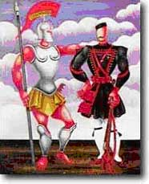

| Δραστηριότητα 2 |

Παρατήρησε προσεχτικά αυτόν τον πίνακα του Εγγονόπουλου.
Αναγνωρίζεις στοιχεία που δηλώνουν τη γεωγραφική περιοχή στην οποία αναφέρεται το έργο;
Ποιες περίοδοι της ελληνικής ιστορίας φαίνεται να έχουν εμπνεύσει το ζωγράφο; Μπορείς να σκεφτείς ένα μήνυμα για την ελληνική ιστορία, που ο ζωγράφος θέλει να μεταφέρει με αυτόν τον πίνακα;
Τι τίτλο θα έδινες εσύ σ’ αυτό το έργο;
Σύγκρινε τα εκφραστικά μέσα (χρώμα, ύφος, θέμα κ.λπ.) του έργου αυτού με άλλα έργα του Εγγονόπουλου.
[έργα του Εγγονόπουλου μπορείς να βρεις στις ιστοσελίδες: http://www.engonopoulos.gr/_homeEL/painting.oil.p1.html
http://www.geocities.com/Paris/Cafe/1867/eggonopoulos.htm ]
|